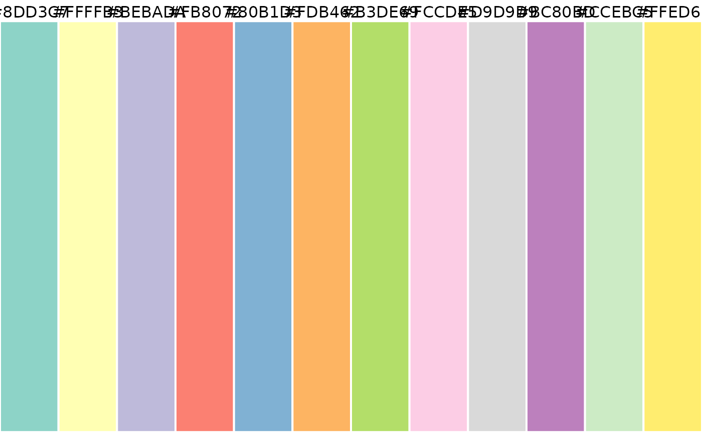

Get a cols4all color palette: c4a returns the colors of the specified palette, and c4a_na returns the color for missing value that is associated with the specified palette. Run c4a_gui to see all available palettes, which are also listed with c4a_palettes.
Usage
c4a(
palette = NULL,
n = NA,
m = NA,
type = c("cat", "seq", "div", "bivs", "bivc", "bivd", "bivg"),
reverse = FALSE,
order = NULL,
range = NA,
format = c("hex", "RGB", "HCL"),
nm_invalid = c("error", "repeat", "interpolate"),
verbose = TRUE
)
c4a_na(palette = NULL, type = c("cat", "seq", "div"), verbose = TRUE)Arguments
- palette
name of the palette. See
c4a_palettesfor options. If omitted, the default palette is provided byc4a_default_palette. The palette name can be prefixed with a"-"symbol, which will reverse the palette (this can also be done with thereverseargument).- n
number of colors. If omitted then: for type
"cat"the maximum number of colors is returned, for types"seq"and"div", 9 colors.- m
number of rows in case type is
"bivs","bivc","bivd"or"bivg"(which stand for respectively sequential, categorical, diverging and desaturated (gfor 'grayscale')).- type
type of color palette, in case
paletteis not specified: one of"cat"(categorical/qualitative palette),"seq"(sequential palette),"div"(diverging palette), and"bivs"/"bivc"/"bivd"/"bivg"(bivariate: respectively seq-seq seq-cat, seq-div, and seq-desaturated).- reverse
should the palette be reversed?
- order
order of colors. Only applicable for
"cat"palettes- range
a vector of two numbers between 0 and 1 that determine the range that is used for sequential and diverging palettes. The first number determines where the palette begins, and the second number where it ends. For sequential
"seq"palettes, 0 means the leftmost (normally lightest) color, and 1 the rightmost (often darkest) color. For diverging"seq"palettes, 0 means the middle color, and 1 both extremes. If only one number is provided, this number is interpreted as the endpoint (with 0 taken as the start).- format
format of the colors. One of:
"hex"character vector of hex color values,"RGB"3 column matrix of RGB values, or"HCL"3-column matrix of HCL values- nm_invalid
what should be done in case
normis larger than the maximum number of colors or smaller than the minimum number? Options are"error"(an error is returned),"repeat", the palette is repeated,"interpolate"colors are interpolated. For categorical"cat"palettes only.- verbose
should messages be printed?
Examples
c4a_palettes("div")
#> [1] "hcl.blue_red1"
#> [2] "hcl.blue_red2"
#> [3] "hcl.blue_red3"
#> [4] "hcl.red_green"
#> [5] "hcl.purple_green"
#> [6] "hcl.purple_brown"
#> [7] "hcl.green_brown"
#> [8] "hcl.blue_yellow2"
#> [9] "hcl.blue_yellow3"
#> [10] "hcl.green_orange"
#> [11] "hcl.cyan_magenta"
#> [12] "brewer.br_bg"
#> [13] "brewer.pi_yg"
#> [14] "brewer.prgn"
#> [15] "brewer.pu_or"
#> [16] "brewer.rd_bu"
#> [17] "brewer.rd_gy"
#> [18] "brewer.rd_yl_bu"
#> [19] "brewer.rd_yl_gn"
#> [20] "brewer.spectral"
#> [21] "tol.sunset"
#> [22] "tol.nightfall"
#> [23] "tol.bu_rd"
#> [24] "tol.pu_gn"
#> [25] "viridis.cividis"
#> [26] "kovesi.div_gn_wh_pu"
#> [27] "kovesi.div_bu_bk_br"
#> [28] "kovesi.div_bu_wh_rd"
#> [29] "kovesi.div_bu_wh_rd2"
#> [30] "kovesi.div_bu_gy_yl"
#> [31] "kovesi.div_bu_bk_rd"
#> [32] "kovesi.div_bu_gy_rd"
#> [33] "kovesi.div_isoluminant_tq_or"
#> [34] "kovesi.div_rainbow"
#> [35] "kovesi.div_tq_wh_pk"
#> [36] "kovesi.div_tq_gy_pk"
#> [37] "kovesi.div_gn_wh_rd"
#> [38] "kovesi.div_gn_bk_rd"
#> [39] "wes.zissou1"
#> [40] "carto.tropic"
#> [41] "carto.temps"
#> [42] "carto.teal_rose"
#> [43] "carto.geyser"
#> [44] "carto.fall"
#> [45] "carto.earth"
#> [46] "carto.army_rose"
#> [47] "scico.broc"
#> [48] "scico.cork"
#> [49] "scico.vik"
#> [50] "scico.lisbon"
#> [51] "scico.tofino"
#> [52] "scico.berlin"
#> [53] "scico.bam"
#> [54] "scico.roma"
#> [55] "scico.vanimo"
#> [56] "scico.managua"
#> [57] "tableau.orange_blue_diverging"
#> [58] "tableau.red_green_diverging"
#> [59] "tableau.green_blue_diverging"
#> [60] "tableau.red_blue_diverging"
#> [61] "tableau.red_black_diverging"
#> [62] "tableau.gold_purple_diverging"
#> [63] "tableau.red_green_gold_diverging"
#> [64] "tableau.sunset_sunrise_diverging"
#> [65] "tableau.orange_blue_white_diverging"
#> [66] "tableau.red_green_white_diverging"
#> [67] "tableau.green_blue_white_diverging"
#> [68] "tableau.red_blue_white_diverging"
#> [69] "tableau.red_black_white_diverging"
#> [70] "tableau.orange_blue_light_diverging"
#> [71] "tableau.temperature_diverging"
#> [72] "tableau.classic_red_green"
#> [73] "tableau.classic_red_blue"
#> [74] "tableau.classic_red_black"
#> [75] "tableau.classic_area_red_green"
#> [76] "tableau.classic_orange_blue"
#> [77] "tableau.classic_green_blue"
#> [78] "tableau.classic_red_white_green"
#> [79] "tableau.classic_red_white_black"
#> [80] "tableau.classic_orange_white_blue"
#> [81] "tableau.classic_red_white_black_light"
#> [82] "tableau.classic_orange_white_blue_light"
#> [83] "tableau.classic_red_white_green_light"
#> [84] "tableau.classic_red_green_light"
#> [85] "seaborn.vlag"
#> [86] "seaborn.icefire"
#> [87] "c4a.bu_br_div"
#> [88] "c4a.pu_gn_div"
#> [89] "met.benedictus"
#> [90] "met.cassatt1"
#> [91] "met.cassatt2"
#> [92] "met.demuth"
#> [93] "met.hiroshige"
#> [94] "met.homer1"
#> [95] "met.homer2"
#> [96] "met.ingres"
#> [97] "met.isfahan1"
#> [98] "met.johnson"
#> [99] "met.morgenstern"
#> [100] "met.okeeffe1"
#> [101] "met.paquin"
#> [102] "met.troy"
#> [103] "parks.acadia"
#> [104] "parks.arches"
#> [105] "parks.olympic"
c4a(type = "cat")
#> These are the colors from palette "tol.muted", the default for type "cat":
#> [1] "#CC6677" "#332288" "#DDCC77" "#117733" "#88CCEE" "#882255" "#44AA99"
#> [8] "#999933" "#AA4499"
(pal = c4a("tol.sunset", n = 7, range = c(0, .6)))
#> [1] "#6EA6CD" "#97C9E1" "#C2E4EF" "#EAECCC" "#FDDA8B" "#FDB366" "#F67E4B"
c4a_plot(pal)

c4a("set2")
#> Multiple palettes called "set2 found: "brewer.set2", "hcl.set2". The first one, "brewer.set2", is returned.
#> [1] "#66C2A5" "#FC8D62" "#8DA0CB" "#E78AC3" "#A6D854" "#FFD92F" "#E5C494"
c4a("hcl.set2")
#> [1] "#ED90A4" "#EB9397" "#E79689" "#E29A7C" "#DC9E70" "#D4A264" "#CCA65A"
#> [8] "#C2AA53" "#B7AE50" "#ABB150" "#9DB555" "#8EB85D" "#7EBA68" "#6CBD73"
#> [15] "#58BF80" "#40C08D" "#1DC199" "#00C1A6" "#00C1B2" "#00C0BE" "#00BFC8"
#> [22] "#00BCD2" "#38B9DA" "#56B6E1" "#6FB1E7" "#86ADEA" "#9AA8EC" "#ACA2EC"
#> [29] "#BB9DEA" "#C998E7" "#D494E1" "#DD91DA" "#E48FD1" "#E98EC7" "#EC8EBC"
#> [36] "#EE8EB0"
c4a("hcl.set2", n = 8)
#> [1] "#ED90A4" "#D8A06A" "#ABB150" "#62BE79" "#00C1B2" "#48B8DE" "#ACA2EC"
#> [8] "#E190D6"
# reversed palette
c4a("hcl.set2", reverse = TRUE, n = 8)
#> [1] "#E190D6" "#ACA2EC" "#48B8DE" "#00C1B2" "#62BE79" "#ABB150" "#D8A06A"
#> [8] "#ED90A4"
# handy shortcut
c4a("-hcl.set2", n = 8)
#> [1] "#E190D6" "#ACA2EC" "#48B8DE" "#00C1B2" "#62BE79" "#ABB150" "#D8A06A"
#> [8] "#ED90A4"
# the color for missing values is white:
c4a_na("hcl.set2")
#> [1] "#FFFFFF"